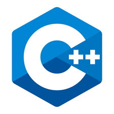

C++ STL find Function
*개인적인 공부 내용을 기록하는 용도로 작성한 글 이기에 잘못된 내용을 포함하고 있을 수 있습니다.
_reference
https://www.cplusplus.com/reference/algorithm/find/
#find
<algorithm> 에 정의되어 있다.
template<class InputIterator, class T>
InputIterator find (InputIterator first, InputIterator last, const T& val)
{
while (first!=last) {
if (*first==val) return first;
++first;
}
return last;
}
find() 함수는 일련의 자료구조(Array, Vector, Deque..)내에서 원하는 값을 탐색하는 함수이다.
범위(first부터 last전)안의 원소들 중에서 val과 일치하는 첫 번째 원소의 이터레이터를 리턴한다. 범위 안의 원소를 비교할 때 Operator == 을 사용하며, <string>의 find와는 다른 함수이다.
_Parameter
first, last : 탐색할 원소의 시작과 끝을 가리키는 이터레이터로, first는 범위 내에 포함되지만 last는 포함되지 않는다.
val : 탐색을 수행할 비교 값.
_Return Value
탐색에 성공하면 val과 일치하는 원소들 중 첫 번째 원소의 이터레이터를 리턴한다.
탐색에 성공하지 못하면 last를 리턴한다.
_Example
* 배열과 find
int형 배열 myInts에서 값 40을 탐색하는 예제이다. 반환받은 인덱스(p)에서 배열의 첫 번째 인덱스(first) myInts를 빼 주면 탐색을 성공한 인덱스의 값을 출력시킬 수 있다.
#include <iostream>
#include <algorithm> // std::find
#include <vector> // std::vector
using namespace std;
int main(){
int myInts[] = {10, 20, 30, 40, 50};
int *p;
p = find(myInts, myInts + 5, 40);
if(p == myInts + 5){
cout << "해당하는 값을 탐색할 수 없습니다.\n";
}
else{
cout << "value is " << *p << endl;
cout << "index is " << p - myInts << endl;
}
return 0;
}실행결과
value is 40
index is 3
* 벡터와 find
iteraotr it을 선언해 find 함수의 리턴값을 반환받는다.
#include <iostream>
#include <algorithm> // std::find
#include <vector> // std::vector
using namespace std;
int main(){
vector<int> myVector = {10, 20, 30, 40, 50};
vector<int>::iterator it;
it = find(myVector.begin(), myVector.end(), 30);
if(it == myVector.end()){
cout << "해당하는 값을 탐색할 수 없습니다.\n";
}
else{
cout << "value is " << *it << endl;
cout << "index is " << it - myVector.begin() << endl;
}
return 0;
}이 때 auto 키워드를 사용하면 코드를 보다 간략하게 줄일 수 있다.
#include <iostream>
#include <algorithm> // std::find
#include <vector> // std::vector
using namespace std;
int main(){
vector<int> myVector = {10, 20, 30, 40, 50};
auto it = find(myVector.begin(), myVector.end(), 30);
if(it == myVector.end()){
cout << "해당하는 값을 탐색할 수 없습니다.\n";
}
else{
cout << "value is " << *it << endl;
cout << "index is " << it - myVector.begin() << endl;
}
return 0;
}실행결과
value is 30
index is 2